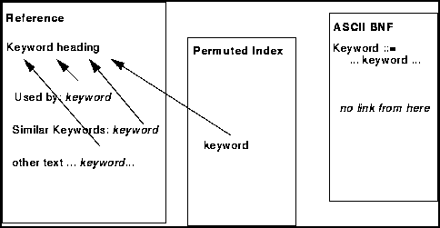

This section gives an overview of the structure and content of the Reference Manual, and should be read first.
These are set up according to the following diagram:

There are no links from the keywords used in examples to their definitions. These have been left out to reduce the overall file size.
Since the files are quite large, it may be necessary to allocate more memory to Frame Viewer to have more than one file open at a time.
This section gives an introduction to the basic syntactic structure of EDIF.
This section lists each keyword and gives a description of each keyword, in the following sections:
syntax
where it is used ('Used by')
similar keywords
constraints (if any)
description
example (except for simplest keywords)
The lexical syntax for the EDIF primitives (identifier, integerToken, stringToken and whiteSpace) are given in this section and these do not appear in the ascii BNF file.
The syntax for keyword definition, keywordMap, is given for each of the keyword levels. However, the use of defined keywords is not explicitly incorporated into all the following productions. Such use is legal when expansion of the keyword is legal.
All terminals of the grammar are enclosed by apostrophes. Since EDIF does not distinguish case, the keywords need not appear in the same case as shown. An implementation should treat 'PORT', 'port' and 'Port' as the same identifier.
The vertical bar "|" separates alternatives. For example, ( A | B | C ) represents exactly one occurrence of A or B or C.
Parentheses "( )" show syntactic association. For example, A ( B | C ) denotes A B or A C. The parentheses used for syntactic association should not be confused with the terminals '(' and ')'.
Braces "{ }" indicate zero or more occurrences of the enclosed syntactic construct. For example, { A | B } represents the empty sequence , as well as A B, and A B B B, B B A B A, and so on.
Brackets "[ ]" indicate an optional construct.
Angled brackets "< >" signify a construct that may occur at most once within the immediately enclosing syntactic grouping construct. For example, { A | <B> } represents all sequences of zero or more A's that contain at most one B; that is, A, A A, B, A A B A, B A A A A, and the empty sequence are all valid sequences.
The terminals of EDIF are string tokens, integer token and identifier. They are defined on the corresponding reference pages.
This section gives a summary of where each keyword is used together with the additional information about how it is used.
If a keyword is used as a required item, this is indicated by an exclamation mark, !.
If it may be used at most once, this is indicated by an angled bracket, <.
If it is used zero or many times, this is indicated by a star, *.
Where there is no prefix to a keyword in the "Used by" section, this means that the keyword is not a form and the above categories are not appropriate.
Constraints consist of restrictions and rules that need to be applied over and above the syntactic rules. These are special rules that are not contained in the syntax, either because it is too complex to do so or because too many additional keywords would be needed.
The syntactic rules include the integrity of the references, i.e. that all items referenced have been defined before they are referenced.
NOTE: The Information Model gives definitive details of all constraints.
This is a list of keywords which are similar to the one being defined, and may be useful as a cross reference to other parts of the file.
This index is provided as a cross reference between keywords related by common words. By convention, composite keywords are formed by concatenating words together, each new word (except the first) beginning with a capital letter. This index takes each of these words and gives a list of all other keywords containing the same word.
The following standards are referenced in keyword descriptions:
JEDEC Standard JESD30-A March 1993
Electronic Industries Association
Engineering Dept
2500 Wilson Boulevard
Arlington, VA 22201-3834
USA
BS 308
* Engineering drawing practice
BS 308 : Part 1: 1993
British Standards Institution
2 Park Street
London
W1A 2BS
United Kingdom
ISO
* ISO Standards Handbook 12
Technical drawings, Second edition 1991
* ISO 8859
International Organization for Standardization
ISO Central Secretariat
Case postale 56
CH-1211 Geneve 20
Switzerland
IEEE
* IEEE Std. 1149.1-1990 (for boundary scan port types, see description in schematicPortAttributes)
* IEEE Std. 91-1984 (see description in schematicPortAttributes)
IEEE Customer Service
445 Hoes Lane
PO Box 1331
Piscataway
NJ 08855-1331
USA
JISX
* JIS X 0201
* JIS X 208
Japanese Industrial Standards Committee
c/o Standards Department Agency of Industrial Science and Technology
Ministry of International Trade and Industry
1-3-1, Kasumigaseki
Chiyoda-ku
Tokyo 100
Japan
ANSI
American National Standards Institute
Customer Service
11 West 42nd Street
New York
NY 10036
USA
AFNOR
Association Francaise de Normalisation
Tour Europe
Cedex 7
F-92049
Paris La Defense
France
DIN
Deutsches Institut fuer Normung
Beuth Verlag GmbH
D-10772 Berlin
Germany
MIL-STD
U.S. Military Standard
OASD (P&L) WS,
Pentagon,
Room 2B322
Washington DC 20301-8000
USA
DIE
Die Information Exchange Format
EIectronic Industries Association (see address above)